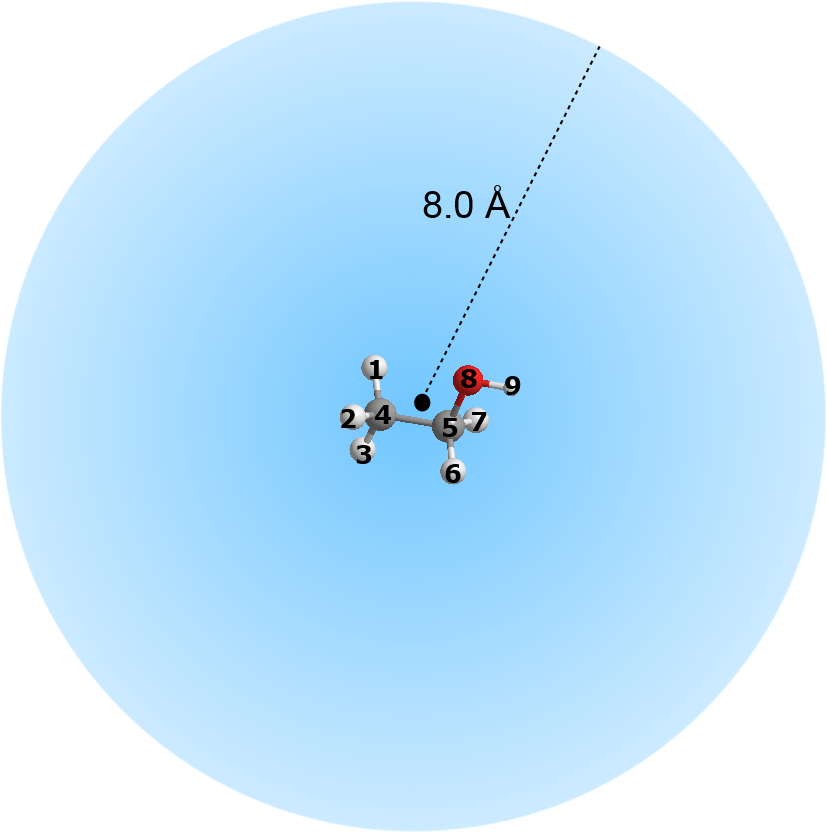

File conversion and atom extractions¶
This page illustrates how to extract atoms and convert input files such as HISTORY files into different file formats, such as the PDB and xyz. This is achieved by using the Trajectory Production Section. Below shows options that are available for this Section.
...
...
--- Trajectory Production Section
(1) 0 * Produce trajectory? (1=yes 0=no)
(2) t.xyz * Filename for trajectory output. (.xyz or .pdb, .mdcrd)
(3) none * PDB template (needed for .pdb trajectory output)
(4) none * Atom label to be excluded for trajectory output. Put 'none' if not require.
(5) 0 * Number of every configuration to skip
(6) 3 * 1 = Static window size, 2= dynamic window size, 3= off
(7) none * Window size (x,y,z). Put 'none' if not require.
(8) 1 272 * Master atom index range (or put 'none')
(9) none * Atom range: start end, cut off distance, cluster shape: 1=sphere 2=cube (none to deactivate)
(10)none * Kinetic energy filter atom index range (or put 'none')
(11)none * Kinetic energy filter range, put 'none' if not require
(12)0.0 0.0 -40.0 * Translation matrix on output configuration: x, y, z (assume orthorhombic cell)
...
...
Note that the numbers in brackets are added here for illustration purposes.
Below provides a summary how to use some of the options.
- Option (2) is where the output file is provided. DL_ANALYSER will automatically decide which file format to use, depending on the extentions being used. For example, filename that ends with .pdb will be written out in the PDB format. A PDB template file is needed (Option (3)) when the PDB format is selected.
- Option (8) define the range of atoms to be read from the input files. Anything outside this range will be ignored.
- Option (9) allows you to extract a chunk of system configuration, centered around a group of atoms.
For example, consider a system consists of some ethanol molecules in water. Assume the first eight atom indices belong to atoms that made up an ethanol molecule. Then, the following parameters:
1 8 8.0 1
means select atom 1 to atom 8, calculate the center of gravity of the chosen atom range. Any atoms that fall within the cut off value of 8.0 angstrom from the center of gravity will be selected and written out into the output file. The outcome would produce a sperical-shaped atomic configuration centered around the ethanol molecule.
To form a cubic box, the following parameters can be used:
1 8 8.0 2
with the half-box length measures at 8.0 angstrom from x, y and z directions.
{kind=link}
{kind=link}